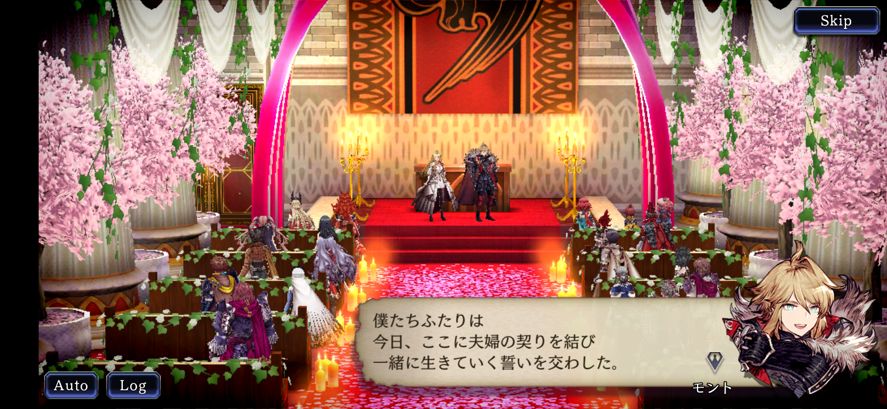
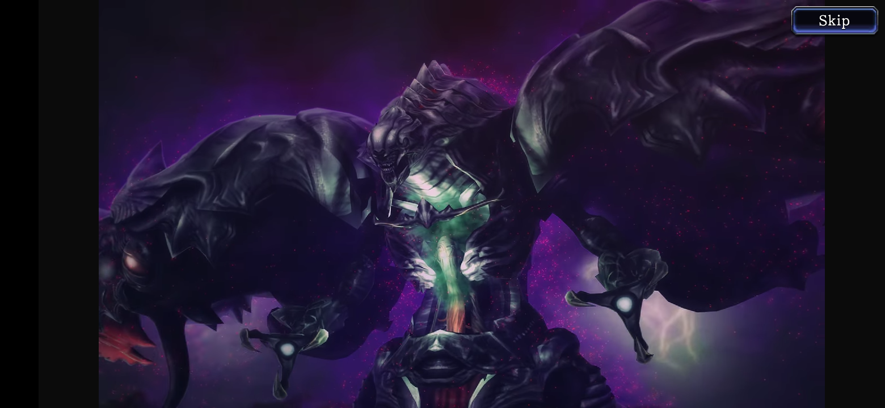
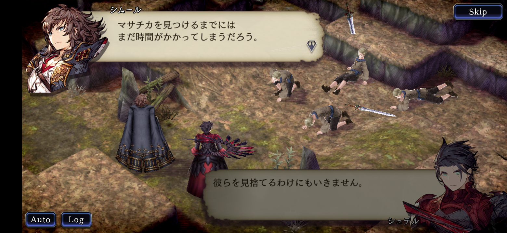

あらすじ
リオニスの上空にあるクリスタルが割れて巨大な化物が現れた。翼持つ者ギルガメッシュはそれを『天異』と呼んだ。圧倒的な力を持つ天異の前に全く歯が立たないモント達。モントはアードラ大陸のすべての人の力を合わせて討伐すべく各勢力の協力を仰ごうとするのであった。
モントとマシュリーが結ばれる
ずっと両想いの二人だったが、ようやく結ばれることになりました。
各地で天異が猛威を振るう
流される血に反応して人々の魂を喰らうという天異は戦場に引きつけられる。
忌刀マサチカを求めて
天異を倒すためにマサチカを探す。手に入れるには六振りの刀剣が必要になるが、刀探しは難航している。
